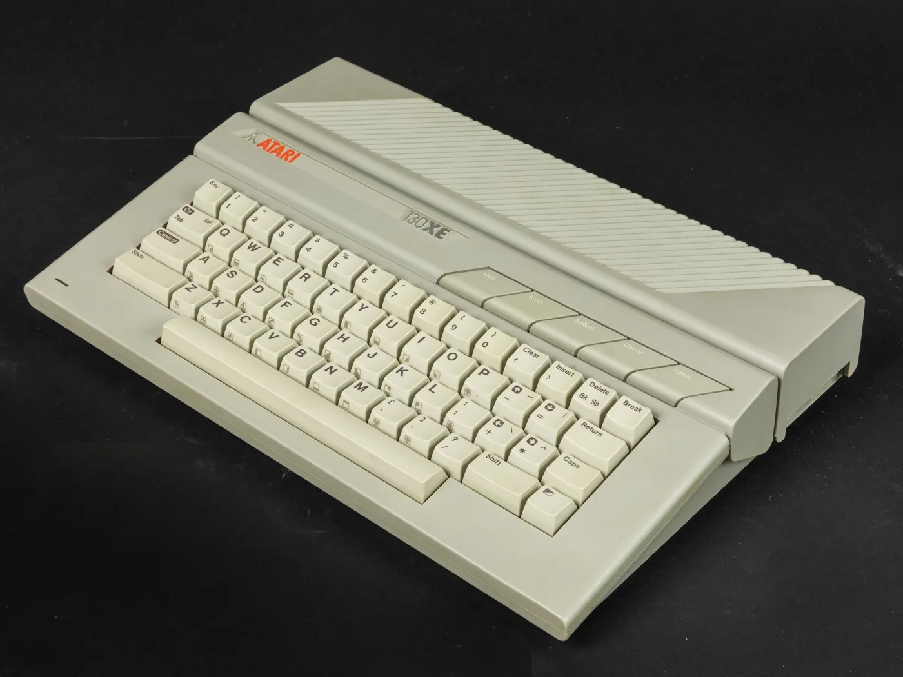
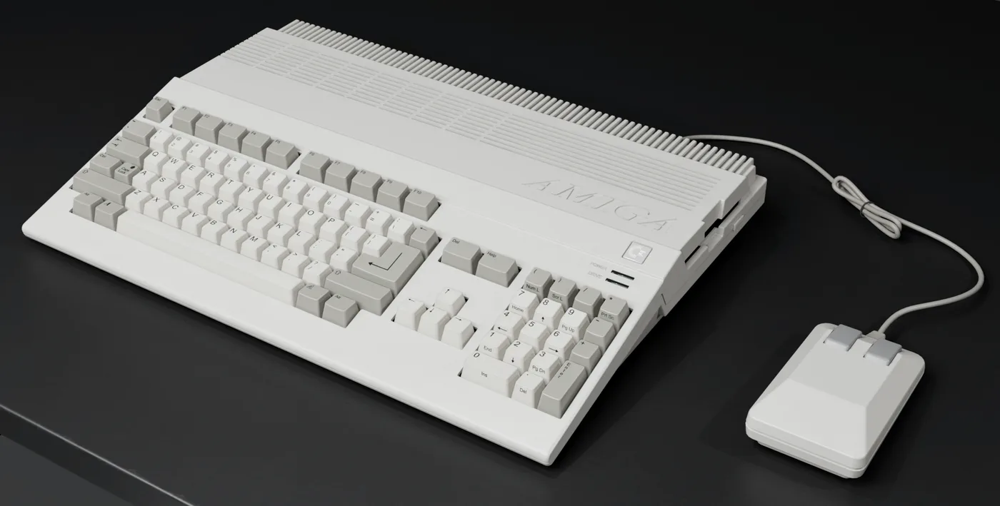

Chief Product Officer at ESET. My first computer was an 8-bit Atari 65XE
when I was six years old. I learned BASIC on it, and computers have been
a passion ever since. An Amiga 500 came next, then a PC, but the Atari
is the one I kept coming back to. On evenings and weekends I still write
code, often for machines from that era.
ESET · productAgenda · demosceneAtari 8-bit · since the nineties
§ 01 · About
An incomplete table of contents for one head.
Long reads / crafts / obsessions
I have spent twenty-five years in cybersecurity and most of those years
in product and engineering leadership at the same company. In parallel,
I have never stopped writing code for the machines I grew up with, or
entering demoscene competitions where the brief is measured in bytes
rather than features.
The through-line across most of what follows is a handful of long-standing
interests: machine learning, classical as much as the deep-learning sort;
IT security and reverse engineering; artificial life and evolutionary
computation; all flavors of optimization; applied mathematics, algorithms
and information theory; design patterns, programming languages, and
programming itself as a craft.
This page collects the work I do outside of the day job, and a little of the
day job too. If something here looks interesting, the links go to the real
thing: source code, downloads, write-ups, forum threads.
Based in Slovakia. Fluent in English, native Polish, advanced Slovak,
basic Russian and German. Reachable by email at the bottom of the page.

Atari 65XE / 130XE · 1985First computer. BASIC, then assembly, then a decade of learning the 6502 the long way round. Still the platform I keep coming back to.

Amiga 500 · 1987What came next. Multitasking, hardware copper lists, and demoscene software on floppies. A different kind of ambition.
§ 02 · Work
Twenty-five years of cybersecurity, mostly at the same company.
ESET · Arcabit · MKS
I started in 2000 as a virus analyst at MKS in Warsaw, disassembling
DOS viruses by hand. Since 2017 I have been Chief Product Officer at
ESET, where I set the product vision and strategy for a portfolio
that today centers on XDR, MDR, endpoint and cloud security.
Before the product role, I spent a decade running R&D. I founded
ESET Poland R&D in 2008 and grew it from a legal entity on paper
to an award-winning office of fifty-plus engineers and analysts, and
from 2013 led Core Technology Development, responsible for the
detection engine and the surrounding cloud systems.
2017 → nowChief Product Officer · ESET
2013 → 2017Head of Core Technology Development · ESET
2008 → 2017Founder & Managing Director · ESET Poland R&D
2007 → 2008Senior Developer · ESET
2005 → 2006Antivirus Engine Lead · Arcabit
2003 → 2005Senior Developer · MKS
2000 → 2003Virus Analyst · MKS
2008 →Founded ESET Poland R&D and grew it from a legal entity on paper to an award-winning office of fifty-plus engineers and analysts. The office design later inspired other regional offices.
2013 →Built the foundation of ESET's first machine-learning pipeline for automated malware classification, in Python with scikit-learn, XGBoost and TensorFlow. Still in production.
2016 →Initiated and delivered ESET's EDR product, later the XDR platform that underpins the current MDR service offering.
★Received the ESET Medal of Honor, an award voted by employees for representing the company's values.
+Designed a hiring program for reverse engineers and security engineers that is still in use as a recruitment method across several offices.
02 / a
Areas of expertise
Product management, vision and strategy. XDR, EDR, MDR, endpoint
and cloud security. Applied machine learning. Reverse engineering.
Design patterns and programming languages. People and branch-office
management. Public speaking on all of the above.
02 / b
Education
MSc in Computer Science, Military University of Technology, Warsaw
(2000–2005). My thesis, "Detection of Internet Threats
using Neural Networks", applied neural networks to intrusion
detection a good decade before "AI" became a marketing word.
02 / c
Speaking
I speak regularly at international security and business
conferences, and at internal ESET events. Topics tend to cluster
around threat intelligence, machine learning in security, product
strategy, and the bits of our research that are safe to talk about
in public. Audiences have been kind enough to put me near the top
of the ratings more than once.
§ 03 · Projects
Three things I do on evenings and weekends.
Games / Sizecoding / Tools
Make games for old computers. Write demoscene intros that fit in a few
hundred bytes. Build the tools that make both possible.
03 / a · Games
Small games for old hardware.
Atari 8-bit, mostly
Usually Atari 8-bit, occasionally with ports to other platforms. The
constraints are the point: sixty-four kilobytes of RAM concentrates
the mind.
Dozens of finished or half-finished projects over the years; a few
worth showing.
Heavily inspired by the old Java mobile games Reign of Swords
and Ancient Empires, with a nod to Advance Wars and
The Battle for Wesnoth. Fog of war, line of sight, a party
of knights versus the undead. Reviewers were kind to it at the time
and it is still played today.
A puzzle game for Atari XL/XE inspired by Baba Is You and
Robbo, with its own mechanics and levels. The reception
was generous enough that the game was ported to Atari ST, Amiga
and Atari Jaguar, and shipped in a limited physical edition
with LEGO bricks in the box, which I believe is a first
for the platform.
You play the predator. A reimagined Hoplite for the
Atari 8-bit: tight rulesets, turn-based combat, one clean
decision at a time. From the 2013 ABBUC Software Contest. Code
by me, graphics by Paweł "ripek" Szewczyk, music by Michał
"stRing" Radecki.
An experiment in AI-assisted authoring. The interesting part,
for programmers, is underneath the story: a custom
programming language (NIF) with a hand-written lexer, parser,
compiler and stack-based VM, built from scratch to run
the narrative engine.
An early experiment: text-based, turn-based survival horror in
roguelike form. Closer in spirit to Half-Life or
Alien vs Predator than to X-COM. You are out
of ammunition, out of light, and out of luck.
A small abstract board game on a 5×5 grid with twelve tokens.
A pushing mechanic makes it behave more like chess than its
size suggests. Playable directly from this site against a
local opponent.
Space tradingAtari 8-bitNOMAM Basic Ten-Liners 2014
A galaxy in ten lines of Turbo Basic XL. You are a trader;
Armageddon arrives on day 1000; between now and then there are
planets, missions, and a black hole or two.
A remake of Tom Hudson's Atari 8-bit classic Planetary
Defense. Mouse, keyboard, high scores, explosions. The
oldest release here that is still easy to run.
A graphics converter that takes a modern image and produces a display
list for the Atari 8-bit, abusing mid-scanline register changes,
sprite multiplexing and palette tricks to get something like a
photograph out of a machine with 128 colors and no framebuffer. The
interesting part is the search: an embedded 6502/ANTIC emulator
driven by Late Acceptance Hill Climbing and
Diversified Late Acceptance Search, optimizing the
program that draws the picture rather than the picture itself.
Profile Guided Optimization, reproducible runs, auto-save and resume.
A write-up on squeezing performance and size out of C on the 6502, for
people who think compilers are magic but still want the magic to fit
in 16 kilobytes.
Audio for 8-bit targets
Three related projects about getting modern audio onto 8-bit hardware.
Build systems for DOS-era C/C++ projects, for when you actually want
to target DOS. See also
DOSBOXBUILD.
Retro handhelds
The other side of retro-computing: playing old games on small modern
devices built by people who love the same machines. Current favorites
are the Miyoo Mini and the Ayn Odin 2.
Both are small miracles of how far emulation and embedded hardware
have come.
The same optimization family applied to a very different problem:
folding primes. Related in spirit to RastaConverter in that the heavy
lifting is a well-tuned local search.
Member of Agenda. I focus mostly on
sizecoding: writing intros in 256, 128, 64 or even
fewer bytes that still manage to draw something worth watching. It is
an odd discipline, closer to mathematical puzzle-solving than to
software engineering, and I enjoy the way it strips programming down
to instructions and cycles.